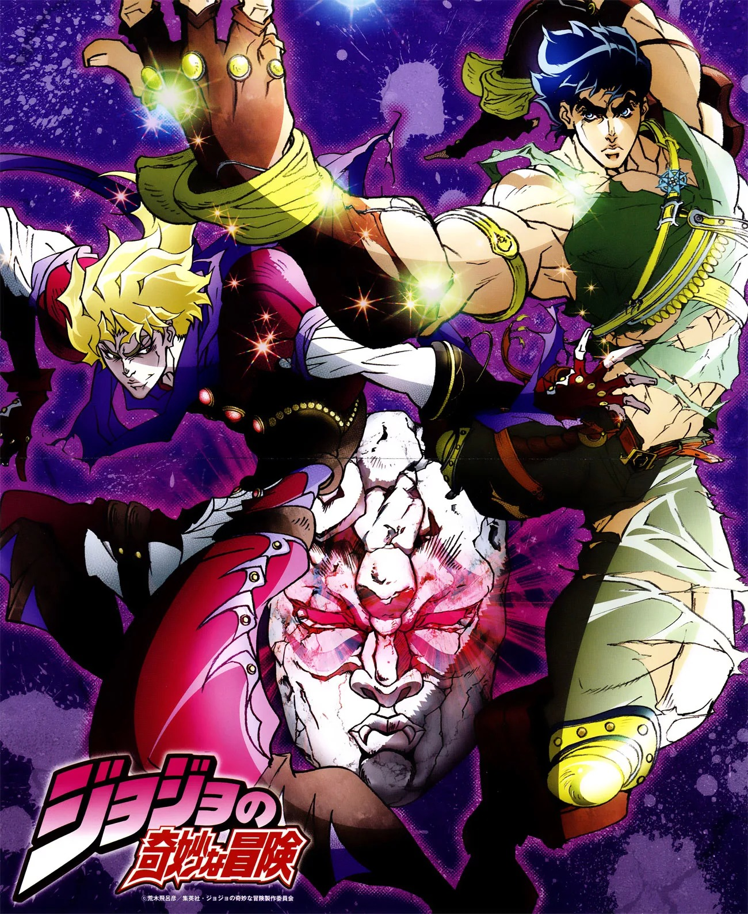
Призрачная кровь
Джонатан Джостар – аристократический мальчик, чья жизнь внезапно меняется с приходом таинственного парня, Дио Брандо. Став приемным братом Джонатана, Дио на протяжении многих лет пытался сломить волю семьи Джостаров, чтобы завладеть всем наследством. Это приводит его к местонахождению каменной маски, которая делает его бессмертным вампиром. Джонатан в свою очередь обучается у эксцентричного итальянца Уилла А. Цеппели, древней технике боевых искусств, известной как Хамон. Джонатану необходимо незамедлительно овладеть силой и победить Дио, прежде тот использует вновь обретенные силы для порабощения человечества.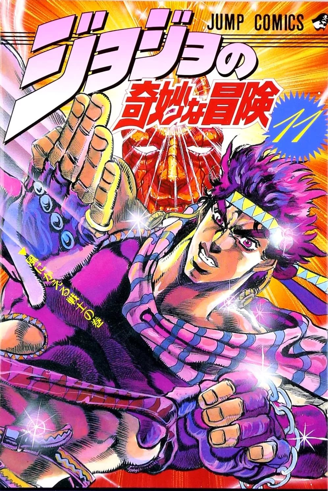
Боевое стремление
Роберт Э. О. Спидвагон, разбогатевший на бизнесе по добыче нефти, основывает Фонд Спидвагона. Зимой 1938 года члены фонда обнаруживают мезоамериканскую пирамиду в Мексике, а в ней - множество каменных масок и колонну, состоящую из аминокислоты, в которую встроено тело человека. При осмотре выясняется, что у человека есть пульс, а значит он жив. Опасаясь, что то зло, которое Джонатан Джостар победил 49 лет назад, может вернуться, Спидвагон вызывает на помощь Стрэйтса для уничтожения каменных масок и загадочного существа. Однако мастер хамона внезапно убивает членов фонда и тяжело ранит самого Спидвагона, а пролитую кровь использует на одну из масок и, жаждя вечной молодости и силы, обращается в вампира.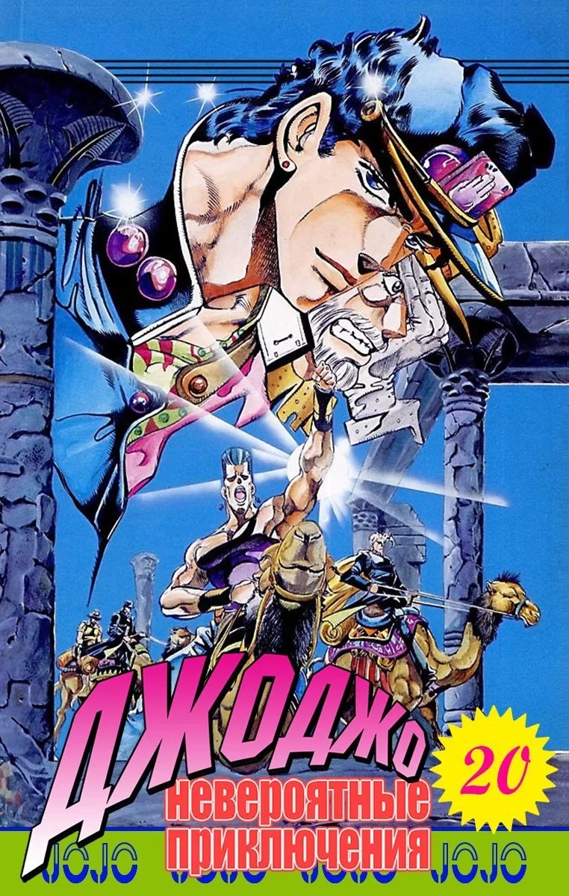
Крестоносцы звёздной пыли
В 1983 году трое кладоискателей поднимают со дна моря неподалеку от Канарских островов старинный гроб с выгравированной надписью ДИО, который они принимают за огромный сундук с сокровищами. Спустя некоторое время, их лодку находят дрейфующей в океане, но все члены экипажа пропали с неё без вести.Новости франшизы
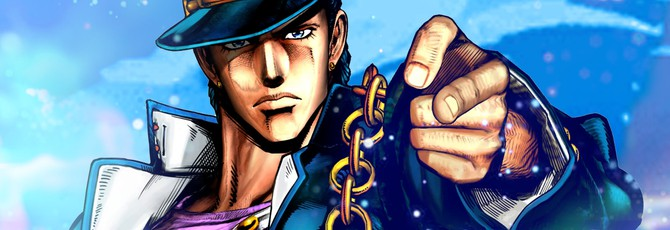
Bandai Namco анонсировала баттл-рояль JoJo's Bizarre Adventure для японских аркадных автоматов
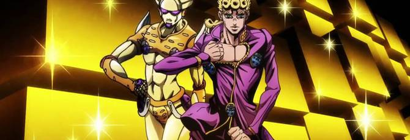
Джорно Джованна и его стэнд в новом тизере JoJo's Bizzare Adventure: Vento Aureo
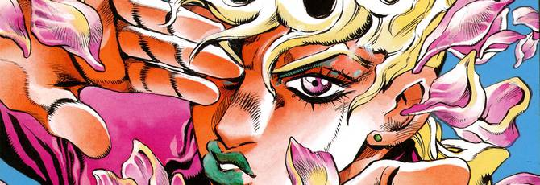
Дебютный тизер JoJo's Bizarre Adventure: Vento Aureo
Главные герои
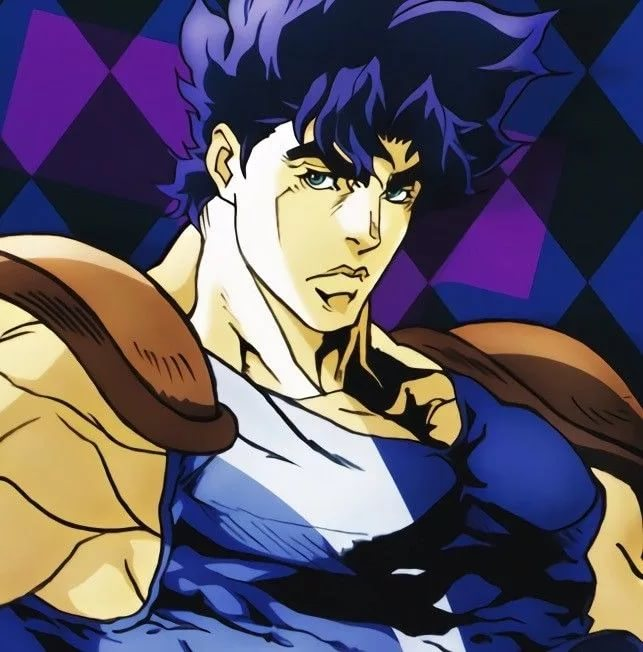
Джонатан Джостар
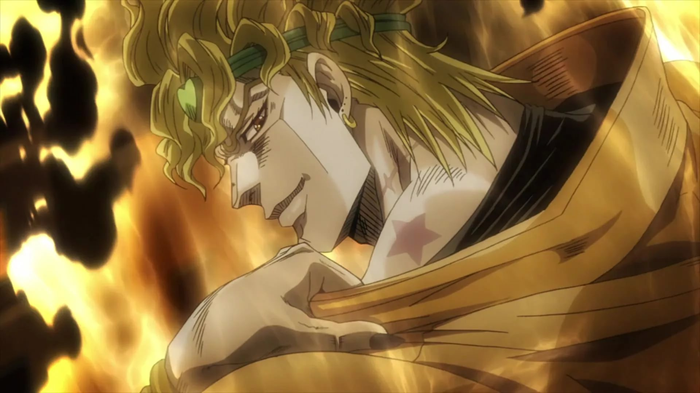
Дио Брандо
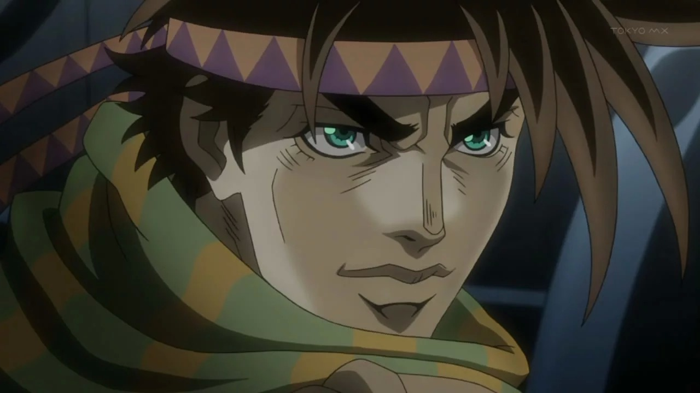
Джозеф Джостар
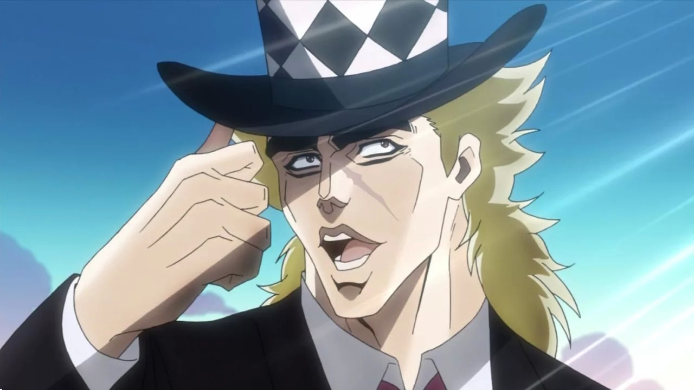
Спидвагон
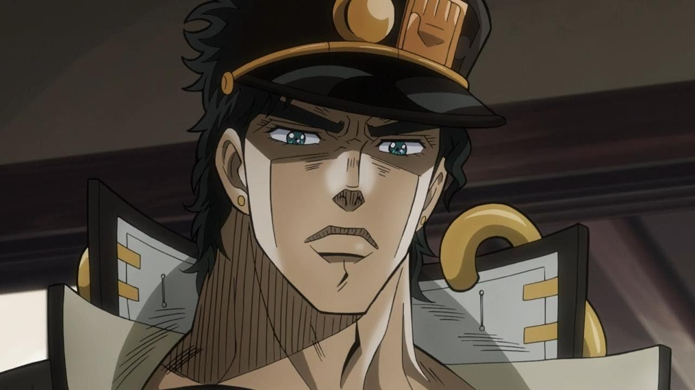
Джотаро Куджо
Автор манги
К рисованию манги Араки подтолкнули несколько вещей: это его неблагоприятные отношения с родственниками, доступность материала к изучению (его отец содержал целую коллекцию книг по изобразительному искусству) и то, что он сам очень любил читать мангу, а рисовать начал ещё в четвёртом классе. Мотивировала парня поддержка друзей, которых он считал своими «поклонниками». Именно благодаря ним Хирохико Араки решил, что может стать настоящим художником. С родственниками Араки совсем не ладил (особенно это касается сестёр, которые постоянно ему пакостили). Из-за этого он чувствовал себя отчуждённо: иногда просто не хотел возвращаться домой или выходить из комнаты, где целыми днями читал мангу и книги. Вплоть до конца обучения в школе Араки скрывал ото всех, что рисует мангу.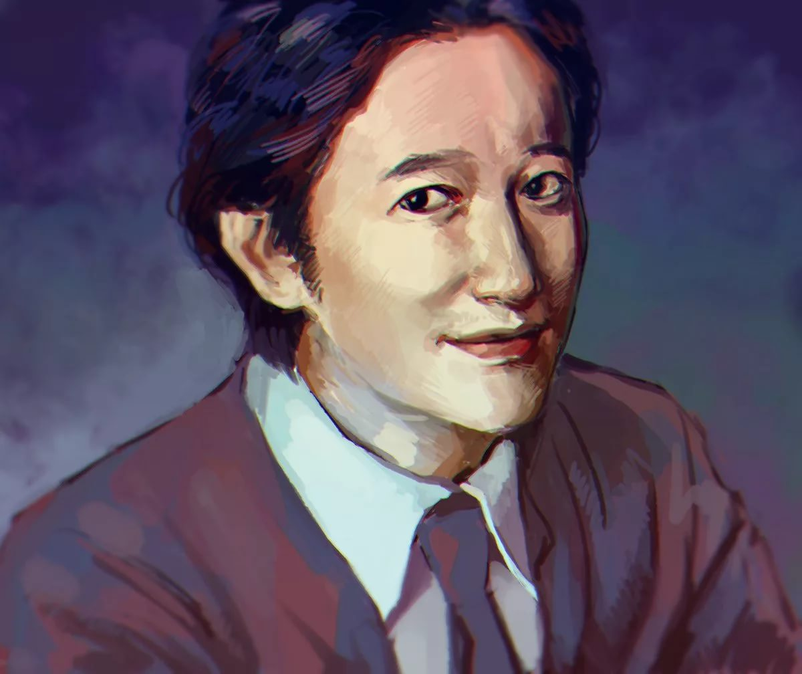